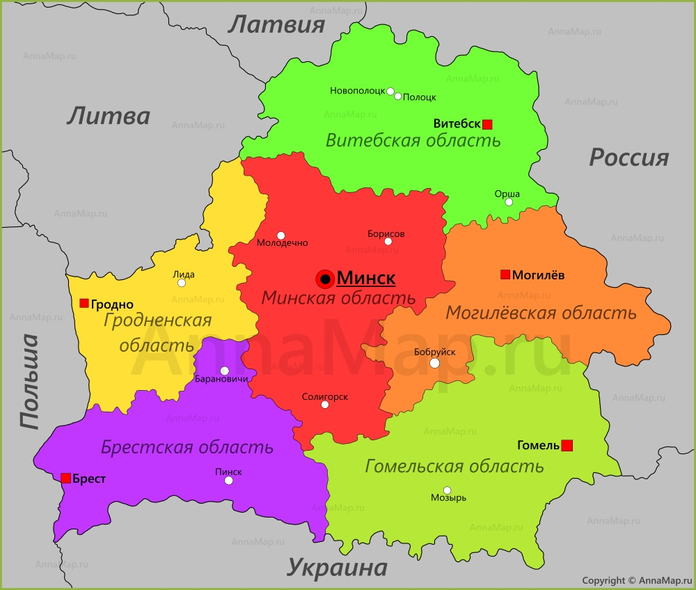

Минск - столица Беларуси располагается недалеко от географического центра страны. Во время Второй мировой город сильно пострадал, поэтому был перестроен и сохранил не так много исторических объектов. Основные достопримечательности: Собор Святых Апостолов Петра и Павла, театр оперы и балета, водно-зелёный диаметр – система водоёмов, парков и бульваров, пересекающая весь Минск, Красный костел.
Гомель находится недалеко от границ с Украиной и Россией. Дворцово-парковый ансамбль Гомеля заложили в XVIII веке при графе Румянцеве. Несколько памятных объектов и мест связано с семьёй Паскевичей, включая их часовню-усыпальницу. Зимний сад создан из старой оранжереи и давно признан памятником архитектуры. А в сквере Туровского можно найти столб с указателями в сторону всех городов-побратимов Гомеля.
Могилёв - город на востоке Беларуси, раскинувшийся на берегах Днепра. Река делит Могилёв на две части. Свято-Никольский женский монастырь – главный архитектурный памятник округи. Сохранились и другие знаковые религиозные объекты: Борисоглебская церковь, костёл Святого Станислава, Трёхсвятительский собор. Местный краеведческий музей – один из самых старых музеев страны.

Карта Беларуси